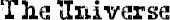

I CAN’T SLEEP tonight. my head is full of thoughts that won’t turn off. lines from my monologues. elements of the periodic table that i’m supposed to be memorizing. theorems i’m supposed to be understanding. olivia. auggie.
miranda’s words keep coming back: the universe was not kind to auggie pullman.
i’m thinking about that a lot and everything it means. she’s right about that. the universe was not kind to auggie pullman. what did that little kid ever do to deserve his sentence? what did the parents do? or olivia? she once mentioned that some doctor told her parents that the odds of someone getting the same combination of syndromes that came together to make auggie’s face were like one in four million. so doesn’t that make the universe a giant lottery, then? you purchase a ticket when you’re born. and it’s all just random whether you get a good ticket or a bad ticket. it’s all just luck.
my head swirls on this, but then softer thoughts soothe, like a flatted third on a major chord. no, no, it’s not all random, if it really was all random, the universe would abandon us completely. and the universe doesn’t. it takes care of its most fragile creations in ways we can’t see. like with parents who adore you blindly. and a big sister who feels guilty for being human over you. and a little gravelly-voiced kid whose friends have left him over you. and even a pink-haired girl who carries your picture in her wallet. maybe it is a lottery, but the universe makes it all even out in the end. the universe takes care of all its birds.